i make music in lots of styles including chiptune, orchestral, jazz, pop, dance, and more.
currently in a footwork/juke-inspired phase.
i use tracker software such as LSDJ, openmpt, and most recently renoise for the majority of my music.
news 
| 2021 oct 01 | new album! lost in focus, you can also find it under the 'albums/EPs' section below. this time i'll be donating the revenue to Open The Circle, a nonprofit that channels resources into footwork education and community organizing in Chicago. |
| 2021 sep 11 | (more of) my music is now on spotify! and apple music and all the other streaming platforms. still in the process of uploading older albums but all my most recent releases are now available for streaming. |
| 2021 aug 27 | new single! RSNNT CHMBR, a remix of a song from Animusic 2. you can also find it under the 'albums/EPs' section below. |
| 2021 apr 07 | my album got reviewed by passion in the weiss! Ghost in the 404: March 2021’s Best Electronic and Dance Music |
| 2021 apr 02 | my album got reviewed in the chicago reader! Chicago producer Vince Kaichan steers footwork toward serenity on Lost in Time |
archive
works
albums/EPs (15)
my original music
| date | name | genre | info | art (click to play) |
|---|---|---|---|---|
| 2021 10 01 | lost in focus | footwork | made with renoise. tracklist: 1.my fantasy 2. dawning 3. planetary 4. spirit apparatus 5. ready 6. hearts 7. morning after 8. sad dancing |
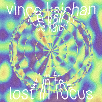 |
| 2021 08 27 | RSNNT CHMBR (animusic remix single) | digital fusion, electronic | a rearrangement of the song resonant chamber by wayne lytle from Animusic 2. | 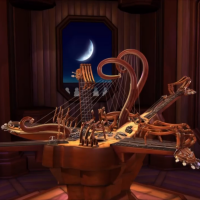 |
| 2021 03 05 | lost in time | footwork | made with renoise. tracklist: 1. 1000 lives 2. mesa 3. hollow planet 4. daybreak 5.basement blue sky 6. end of the world 7. dreams |
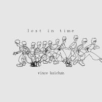 |
| 2020 05 15 | lost in world | footwork | made with renoise. tracklist: 1. where you go 2. eon (ago) 3. waiting for 4. nightmare 5. werk 6. alphonse 7. 9pm (bonus track) |
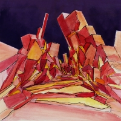 |
| 2018 04 30 | 4MEN430 - DOUBLE TAKE | digital fusion | a collaboration with golgi, j yoshi, and Sinc-X under the name of 4MEN430. tracklist: 1. Return to the Boneyard 2. Overture to a Great Day 3. The Earth is a Hecatonicosachoron 4. Hello Goodbye 5. Blast Me Off 6. すべての欲望 / All Your Desire 7. Hyperspace Vortex 17 8. Multiversal Superhighway |
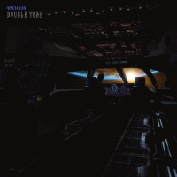 |
| 2016 11 11 | Midsummer Days | digital fusion, jazz | released on DESKPOP. tracklist: 1. Shangri-La Dreaming 2. Mirage 3. Cruising Deep Pacifica 4. Sunshower Meteorite 5. Harvest Moon 6. Hopscotch '97 7. Ice Tea Lemonade (Bonus Track) |

|
| 2015 07 13 | Power Tricks | chiptune, digital fusion | made with LSDJ, released on cheapbeats. tracklist: 1. Illjoy 2. Core Corrupt 3. Ignition 8 4. Drag Strike 5. Arc Electric 6. Stormsong |
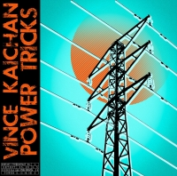 |
| 2015 04 30 | Sunday Groove | digital fusion, jazz | released on cheapbeats. tracklist: 1. C Jones 2. F Phunk 3. Sideway Street 4. Soul Trekker 5. Hometown Dreams 6. By The Fireplace |
|
| 2014 08 11 | Yolanda | chiptune, latin | made with LSDJ, released on The Waveform Generators. tracklist: 1. Yolanda 2. Viverra 3. Novaton 4. Omiero |

|
| 2014 01 25 | Ilio | chiptune | made with LSDJ. tracklist: 1. Iremia 2. Kazan 3. Saraday 4. Dubpark 5. Syntomodial 6. By the Way 7. Sailboat 8. Iliova 9. Shiosai 10. Galaxies (Bonus Track) |
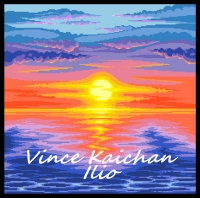 |
| 2013 03 14 | Rising | chiptune | made with LSDJ. tracklist: 1. Dusk 2. Rising 3. Latino Sango 4. Rose-Tinted Glasses 5. Walkie Talkie 6. Restless 7. Shadowdances 8. Dawn |
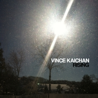 |
| 2012 08 24 | On Thin Air | chiptune | made with Sunvox. tracklist: 1. Northern Lights 2. Summit 3. Binary Lake 4. Floating on Thin Air |
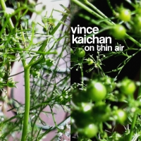 |
| 2012 05 27 | Earthshine | chiptune | made with Sunvox. tracklist: 1. Earthshine 1 2. Earthshine 2 3. Lune 1 4. Lune 2 |
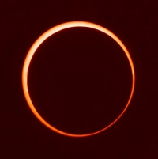 |
| 2012 03 13 | Journey | chiptune | made with LSDJ. tracklist: 1. Magma Mountain 2. Dream Flight 3. Escape! 4. Island Breeze 5. Victory Flower Fields 6. Comms Relay 7. Farewell |
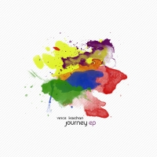 |
| 2011 10 31 | [PB053] Focal Point | chiptune | made with LSDJ, released on PxlBot. this was while i still called myself VCMG, before i had to switch to a different name. tracklist: 1. Introduction [2xLSDJ] 2. Waking Up in the Perseids 3. Surmounting the Highest of Peaks 4. Warp Speed 5. Focal Point 6. New Beginnings Past Old Endings, or How I Learned to Love Life 7. Stars and Skies Forever 8. At Peace (Bonus Track) |
![[PB053] Focal Point](img/focal_point_200px.jpg)
|
compilations (16)
compilation albums that i've appeared in
| date | name | genre | track title | art (click to play) |
|---|---|---|---|---|
| 2022 06 23 | STAFFcirc vol. ε₀ | electronic | Vince Kaichan - juke exam |

|
| 2021 02 01 | STAFFCirc Vol. 7: Terra Octava | microtonal | Vince Kaichan - Ether | |
| 2018 12 07 | ChipWINter Madness | chiptune | Vince Kaichan - Carriage Ride | |
| 2017 08 11 | Chiptunes = WIN: Volume 6 | chiptune, dance | Vince Kaichan - Mistral | 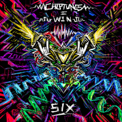 |
| 2017 08 01 | STAFFcirc vol. 3⇋: TERMINAL VICE | digital fusion, jazz | Vince Kaichan - Roll Those Dice! | 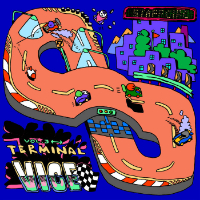 |
| 2017 07 26 | ~ fleeting moments ~ | digital fusion | Vince Kaichan - birb | |
| 2017 02 22 | Balearic Beats vol 43 - Chipmusic sounds of summer | chiptune, drum and bass | Vince Kaichan - Unconditional | 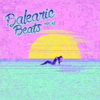 |
| 2016 06 06 | STAFFCIRC vol. 2 - AI BOMB VARIATIONS | chiptune, digital fusion, latin | Vince Kaichan - Bomba da Mente Mecanica | 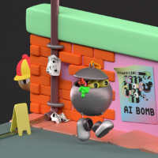 |
| 2015 12 22 | Bundle of WIN | chiptune, dance | Vince Kaichan - Rollerdisco Rumble | 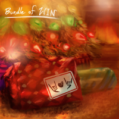 |
| 2015 12 17 | DESKTAPE | digital fusion | Vince Kaichan - Sunset Riders | 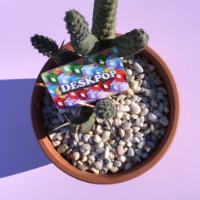 |
| 2015 08 13 | STAFFcirc vol. 1 | digital fusion, funk | Vince Kaichan - Pond Scunk | 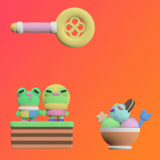 |
| 2014 09 1 | Chiptunes = WIN: Volume 3 | chiptune, digital fusion, jazz | Vince Kaichan - In The Stars |

|
| 2013 07 15 | Chiptunes = WIN: Volume 2 | chiptune | Vince Kaichan - Iskloo Dandruff/Morningstar Express. made in LSDJ | 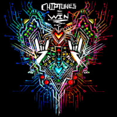 |
| 2013 01 04 | Weekly Treats 2013 | chiptune | Vince Kaichan - Dog Days. made in LSDJ | 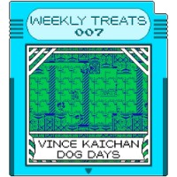 |
| 2012 12 10 | chipWINter | chiptune | Vince Kaichan - Midnight Snowflake. made in SunVox | 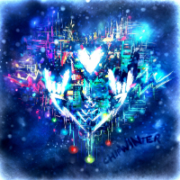 |
| 2012 04 21 | Chip for Cancer vol. 1 | chiptune | Vince Kaichan - Neolectrical. made in LSDJ |
commissions (2)
things i've made for other people as part of a larger project
| date | name | genre | info | art (click to play) |
|---|---|---|---|---|
| 2019 11 01 | Gem Blenders Soundtrack | digital fusion, jazz | written for the Gem Blenders Kickstarter Campaign | 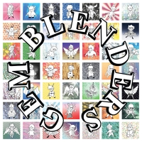 |
| 2019 02 11 | Breaking News! Intro | orchestral | written for a podcast series by octothorpic |
misc (78)
various other songs i've done
may not be a complete list
some songs may be louder or quieter than others, please be careful!
if a song is broken or missing please contact me
may not be a complete list
some songs may be louder or quieter than others, please be careful!
if a song is broken or missing please contact me
| date | name | genre | info | link |
|---|---|---|---|---|
| 2022 | 7 rings (remix) | dance | impromptu remix of Ariana Grande - 7 rings | |
| 2022 | starspeed | electronic | unreal tournament music | |
| 2020 | gpop | pop | an instrumental that was supposed to have vocals over it, but i never got around to finding a vocalist | |
| 2020 | scofflaws | electronic | a sketch made with some jungle samples | |
| 2020 | second | hiphop | a beat made from a sample of a new orleans second line brass band | |
| 2019 | a good time! | chiptune, dance | started this in Ableton at a friend's house, later transcribed it and finished it in renoise | |
| 2019 | alleycat | dance | experimenting with some production stuff in renoise | |
| 2019 | canyon junction | digital fusion | it sounded vast, so i put canyon in the title | |
| 2019 | reflection | pop | production/mixing practice | |
| 2018 | faith | electronic | this is fake gagaku | |
| 2018 | fingerpainting | digital fusion, jazz | first song with renoise ever, using mostly builtin sounds | |
| 2018 | Interplanetary Pigeon main bgm | chiptune, electronic | main bgm loop for Global Game Jam 2018 | |
| 2018 | moss line | digital fusion, folk | a song about trees | |
| 2018 | pog | digital fusion, dance | 2nd song using renoise, more of a study than a full song | |
| 2018 | small world from up there | electronic | discovering how good the roland gigapack sample cd is | |
| 2018 | The Jungle | dance | musing about living in a crowded, sweaty, shitty city that you can't help but love because of its humanity | |
| 2018 | Yesterday Rain | digital fusion, jazz | a short mood sketch | |
| 2018 | the Zubmarine Zone | dance | inspired by golgi's monkeyball music | |
| 2017 | Coast Starlight | digital fusion | song about the time i took the amtrak sleeper car from los angeles to seattle with my family | |
| 2017 | Cool Juice | digital fusion, jazz | i was inspired from reading the Jazz Theory Book by Mark Levine | |
| 2017 | Cortex | dance | i listened to Violin Phase by Steve Reich for the first time and loved it so much i had to sample it and make a short jam | |
| 2017 | crammin jammin [3HB] | chiptune, digital fusion, jazz | written during the 3-hour 'demoscene music competition at MAGWest 2017'. won 1st place | |
| 2017 | cruiser [OHB] | digital fusion, jazz | my entry for a 1-hour battle on the #modulez irc channel. won 1st place | |
| 2017 | electric mountain | digital fusion | my entry for round 1 of s3xmoditmania V. came in 2nd place | |
| 2017 | geoconstruct 1998 | digital fusion | my entry for round 4 of s3xmoditmania V. came in 1st place | |
| 2017 | instruMENTAL main bgm | orchestral | in-game bgm loop for Global Game Jam 2017 | |
| 2017 | Jellyfish Floaters | digital fusion, jazz | a song for an abandoned music game idea i had about being a jellyfish drifting through the sea | |
| 2017 | julaaeeaaee [OHB] | comedy | a 1-hour battle entry where we had to use samples from the infamous hhgregg commercial | |
| 2017 | One Last Dance | pop | entry for the Spring Tracks VI competition on Battle of the Bits | |
| 2017 | Raydancer | dance | a song for an abandoned music game idea i had. this is for a level where you play as a fast and sleek stingray | |
| 2017 | Shakeshack Galaxy | digital fusion, jazz | a song about burgers in space | |
| 2017 | Swashbuckler Saga | chiptune, digital fusion | my entry for the Wildchip != WIN competition at Battle of the Bits. came in 2nd place | |
| 2017 | The VGDC Lounge | digital fusion, latin | a re-arrangement of UCI VGDC Theme Song in a latin bossa nova lounge setting | |
| 2017 | UCI VGDC Theme Song | dance | written for gamedev club to use in promotional materials and branding | |
| 2017 | Vectorspace Rebel | electronic | my entry for round 2 of s3xmoditmania V. tied for 3rd place | |
| 2017 | Vengeance Stage 1 Boss bgm | digital fusion, rock | in-game boss bgm for a gamedev club game in 2017 | |
| 2017 | Vengeance Stage 1 Lava bgm | digital fusion, rock | in-game bgm for a gamedev club game in 2017 | |
| 2016 | adirondack | digital fusion | song from Midsummer Days that i ended up not including | |
| 2016 | EDGELORD main bgm | digital fusion, rock | in-game bgm loop for a gamedev club game jam in 2016 | |
| 2016 | EDGELORD menu bgm | digital fusion, rock | main menu bgm loop for a gamedev club game jam in 2016 | |
| 2016 | Horizon | chiptune, rock | a song with an uninspired title | |
| 2016 | Jasper Overworld Theme | orchestral | bgm loop for some friends' gamedev club project | |
| 2016 | park bench with little mushroom | digital fusion, jazz | a song about a park bench with a little mushroom on a warm summer day | |
| 2016 | Romanian Winter | electronic, drum and bass | an experiment in non-A440 tunings (the song is tuned to A460). partly inspired by a romanian drum n bass track that i liked a lot | |
| 2016 | songbirds' playground | digital fusion | i wrote this one afternoon after watching some birds in the local park | |
| 2016 | The Func | dance | written to celebrate going to therapy and successfully climbing out of a mild depression in fall 2016 | |
| 2016 | Visions of a Near Future | electronic | appears in openmpt as a demo track to show off the capabilities of the .mptm format | |
| 2015 | angelwings | digital fusion | harmonic experiment with diatonic cluster chords | |
| 2015 | Going Home | digital fusion | a song about homesickness written while i was studying abroad in japan inspired by undertale | |
| 2015 | Gotanda Lights | digital fusion, jazz | a song about drinking alone in a tiny backalley bar in tokyo | |
| 2015 | Lumine | electronic | written right after i came back to the US from japan as a goodbye to that chapter of my life | |
| 2015 | Metropolis | digital fusion, jazz | inspired by the dense undulating waves of low-rise and high-rise buildings in tokyo | |
| 2015 | Orbital | breakbeat | a failed attempt at a breakbeat track | |
| 2015 | Solar System Smash bgm | chiptune, dance | in-game bgm loop for a gamedev club game jam in 2015 | |
| 2015 | Solitude | digital fusion, jazz | a song about feeling lonely in a foreign country | |
| 2015 | untitled gameboy song | chiptune | written specifically for performing at Square Sounds Tokyo 2015 pre-party | |
| 2014 | crystal ice caves | electronic | made for an unfinished video game development club project in 2014 | no download yet |
| 2014 | Days of Future Past Present | chiptune | made in 1h30m for an informal competition. made with LSDJ | |
| 2014 | Mambo Jambo | chiptune, latin | an outtake from Yolanda. made in LSDJ | no download yet |
| 2014 | Milky Way | electronic | performed live at freq.fest.v.5.0 in los angeles and also heard in the joystiq farewell podcast | |
| 2014 | Nomu | digital fusion, rock | inspired by the winter/early summer morning fog in southern california | |
| 2014 | oldskoolchip | chiptune | a little sketch imitating the classic amiga/demoscene era chiptune style | |
| 2014 | Suntory | chiptune | made for a C64 demoscene competition but never submitted. made in SIDWizard | |
| 2014 | The Wind and The Rain | electronic | written for Weeklybeats 2014. i didn't last very long before i dropped out | |
| 2014 | Yosemite Valley | digital fusion, rock | thinking about grand nature | |
| 2013 | Afterhours | chiptune | first successfully completed song on the C64. made in SIDWizard | |
| 2013 | Celestial Bodies | chiptune, digital fusion, rock | a rock-style song. made in sunvox | |
| 2013 | cyberwinter | electronic | messing around with the classic Amiga ST-xx sample packs | |
| 2013 | Kinetic Synthetic | chiptune, dance | written as part of an unfinished 5-song live set with PQM and Dakstre. made in LSDJ | |
| 2013 | treds vbk | electronic | a sampling experiment inspired by OK Ikumi. made in sunvox | |
| 2012 | Dakstre | chiptune, dance | written on a high school europe trip. was supposed to segue into PQM. made in LSDJ | |
| 2012 | Darkedge Overworld Theme | digital fusion | overworld bgm for a highschool game project | no download yet |
| 2012 | Drifting to Dreamland | chiptune | a song made in a very inspired day. made in sunvox | |
| 2012 | electroblight | dance | my first song with openmpt ever back in 2012. it's not very good sorry | |
| 2012 | Golden Lonely | chiptune, digital fusion | an old song about bittersweet sunsets | |
| 2012 | Hazy Evening | digital fusion, jazz | my second song with openmpt ever. it's not very good either | |
| 2012 | PQM | chiptune, dance | a dance song i wrote at 15 years old to be played live but i never did perform it live. made in LSDJ | no download yet |
| 2012 | Ultraviolet | electronic | a re-arrangement of a very old gameboy song from 2011 |
contact
twitter: @VinceKaichan
soundcloud: vincmg
email: vincekaichan@gmail.com